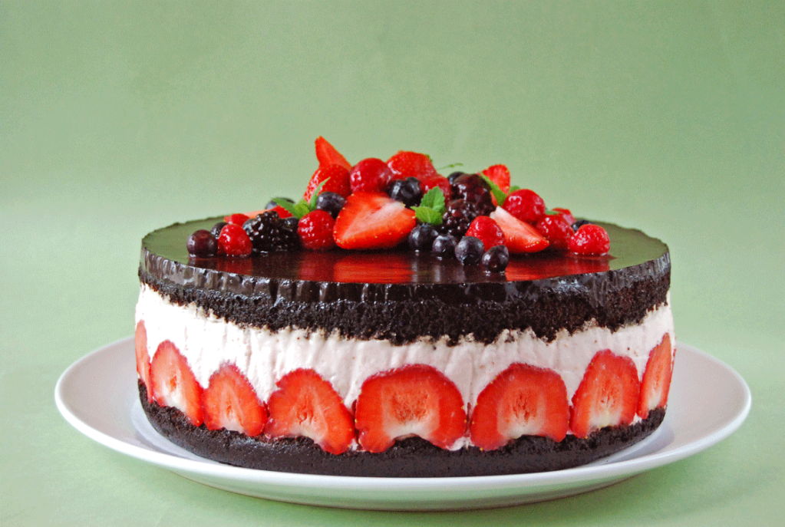

Leírás
Ez a torta az én kedvencem, minden szülinapomon ezt esszük.
Hozzávalók
26 cm átmérőjű tortaformához
a tésztához:
- 16 dkg liszt
- 6 dkg kakaópor
- 10 g szódabikarbóna
- 5 g sütőpor
- csipet só
- 2 tojás
- 24 dkg cukor
- 1 kávéskanál vaníliakivonat
- 14 dkg tejföl (vagy joghurt)
- 80 ml olaj
- 160 ml kávé
a krémhez:
- 30 dkg tejföl
- 8-10 dkg porcukor
- 4 dl tejszín
- 1 citrom leve (mehet bele a reszelt héja is)
- 40 dkg eper pürésítve
- 20 g zselatin
- 8-10 nagyobb eper az oldalára körben
a glazúrhoz:
- 80 ml víz
- 70 ml tejszín
- 9 dkg porcukor
- 4 dkg kakaópor
- 5 g zselatin
a díszítéshez:
Elkészítés
- Bekapcsolom a sütőt 180 fokra.
- Összekeverem a tészta első 5 hozzávalóját. Habosra verem a tojásokat a
cukorral, hozzáadom a vaníliát, a tejfölt, az olajat és a kávét, majd a lisztes keveréket is. Alaposan
elkeverem és az alján sütőpapírral bélelt tortaformába töltöm.
- 30-35 perc alatt megsütöm, tűpróbával ellenőrzöm, hogy a közepe is biztosan átsült-e.
A formában hagyom hűlni 15 percet, majd lekapcsolom a karimát és teljesen kihűtöm a tésztát, ezután
kettévágom és az elmosott tortaformába visszateszem a felső lapot. (az alsó lap alsó oldala lesz a torta
teteje, mert ez a legsimább felület) Ha valakinek van állítható tortagyűrűje, érdemes azzal dolgozni, mert magasabb. Ha nincs, akkor a
tortaforma oldalát lehet körben magasítani egy csík sütőpapírral.
- Félbevágott eperszemekkel kirakom a forma oldalát.
- Kis lábosban 4-5 evőkanál vízzel elkeverem a zselatint, és félreteszem.
- A krémhez összekeverem a tejfölt a cukorral, a citromlével és az eperpürével, majd óvatosan beleforgatom
a habbá vert tejszínt is.
- Kis lángon felolvasztom a zselatint, hozzákeverek 4-5 evőkanálnyi krémet, majd az egészhez öntöm,
alaposan elkeverem. Ezután a tortaformában várakozó lapra öntöm, belesimítom.
Rányomkodom a tetejére a másik lapot, a simább felével fölfelé. Hűtőbe teszem.
- Elkészítem a glazúrt. Kis pohárban elkeverem a zselatint két evőkanál vízzel, amit a kimért vízből veszek el.
A többi hozzávalót a maradék vízzel együtt kis lábosban felmelegítem, óvatosan, fakanállal kevergetve,
nem kell forralni! Leveszem a tűzről
- Mikróban feloldom a zselatint, hozzávegyítem a kakaós részhez, alaposan elkeverem és átszűröm egy kis
lyukú szűrőn. Időnként átkeverve hagyom langyosra hűlni, majd a torta tetejére öntöm.
Nem kell kenegetni, elég a tortaformát megrázogatva eloszlatni a mázat, az tökéletesen simára elterül.
Visszateszem a hűtőbe legalább egy órára.
- Tálalás előtt díszítem gyümölcsökkel. Éles késsel gyönyörűen vágható, a máz a tetején nem lesz kemény.